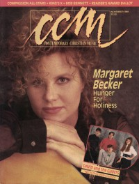

Margaret BeckerOn the cover|  | November 1989
CCM | Media coverage:- Jun 1987 in CCM "Notebook: Ready, Willing, and Able", by Brian Quincy Newcomb
- 1987 in Premiere "Margaret Becker"
- 1988 in Premiere "Premiere: New Music From The New Generation", by Thomas Mann
- Jul 1988 in CCM "Campaign '88", by Steve Rabey
- Sum 1988 in YouthWorker "Tap Your Feet To These Bible Studies"
- Sep 1988 in CCM "Toys in the Band: Margaret Becker"
- Fall 1988 in Harvest Rock Syndicate "Counting The Cost", by Mark Eischer
- Jan 1989 in Campus Life "Out of The Loneliness", by Jim Long
- Jan 1989 in CCM "Christian Musician: For the Love of Six Strings", by Bruce Adolph
- Mar 1989 in Notebored "Praising Her Own Way", by George Metzler
- Fall 1989 in Harvest Rock Syndicate "Margaret Becker", by Kevin Allison
- Nov 1989 in CCM "Hunger For Holiness", by Jerry Wilson
- 1989 in Cornerstone "Interview: Margaret Becker", by Chris Ramsey
- Nov 1989 in Charisma "Music: Reluctant Superstar", by Bernie Sheahan
- Win 1989 in Harvest Rock Syndicate "Concert Review: Memorial Hall, Kansas City, MO", by Thom Granger
- Jan 1990 in CCM "In Concert: Community Theatre, Berkeley, CA", by Stuart Winsor
- May 1990 in CCM "Musicianaries For Christ: Compassion International: Taking A Stand"
- Jul 1990 in Campus Life "Overwhelming Mercy"
- Mar 1991 in Harvest Rock Syndicate "A Woman With Chalk Dust On Her Hands", by Brian Quincy Newcomb
- Apr 1991 in CCM "Clean and Simple", by Bernie Sheahan
- May 1991 in Harvest Rock Syndicate "Concert Review: Trinity Christian College, Palos Heights, IL", by Moria McCormick
- Sep 1991 in CCM "In The News: Becker's Simple Housing Efforts"
- Nov 1991 in CCM "In Concert: Walt Disney World, Orlando, FL", by Ana Gascón Ivey, Lisa DeBoer
- Mar 1992 in Syndicate "Concert Review: Greenville College, Greenville, IL", by Scott J. Drachnik
- Apr 1992 in CCM "In Concert: Concordia University, Mequon, WI", by Jamie Lee Rake
- Jul 1992 in Syndicate "Cornerstone Concert Reviews: Main Stage, Thursday, July 2, 1992", by Jori Butler
- Aug 1992 in CCM "In Concert: Grand Ole Opry House, Nashville, TN", by Thom Granger
- Nov 1992 in CCM "Christian Musician: Steel Strings and a Box of Wood"
- Jun 1993 in CCM "This She Knows", by Thom Granger
- Sep 1993 in The Lighthouse "Margaret Becker", by J. Warner Soditus
- Sep 1993 in Campus Life "Expressions: Margaret Becker"
- Sep 1993 in Campus Life "Just The Facts: Margaret Becker", by Michael Long
- Jan 1994 in CCM "In The News: Tennessee Performing Arts Center, Nashville, TN", by Gregory J Rumburg
- Mar 1994 in Today's Christian Woman "Steps of Faith", by Jan L Sem
- Oct 1994 in CCM "A Trio of Vocal Wealth", by April Hefner
- Jan 1995 in CCM "Concert Review: Cedar Springs Pres. Church, Knoxville, TN", by Melanie Friebel
- Apr 1995 in CCM "The Lessons of Life", by Debra Akins
- Aug 1995 in CCM "Conversations: Measuring The Depth of God's Mercy", by Jim Long
- Feb 1997 in CCM "Conversations: Faith and Grace and Friendship: Three Perspectives", by Jim Long
- Apr 1998 in CCM "Closer to Free", by Melissa Riddle
- May 1998 in CCM "Backstage: Songwriting: Tools of the Trade", by Lou Carlozo
- Jan 2000 in CCM "Opposites Attract", by Anthony DeBarros
- Aug 2000 in CCM "Is Christian Music Making a Difference?"
- Nov 2001 in CCM "Story Behind the Song: Immigrant's Daughter", by Adam Woodroof
- 11 Mar 2002 in Christianity Today "Christianity Today Review: CCM's Growing Pains", by Beau Black
- Aug 2003 in CCM "Finding Life's Balance", by Dave Urbanski
- Sep 2003 in CCM "Fanfare: Tenbrink Remembers: Maggie, Be Ours", by Michael TenBrink
- Aug 2004 in CCM "Get Real: A Cry For Africa", by Stephanie Ottosen
- Aug 2006 in CCM "Lead Me On", by Kristi Henson
Albums & reviews:1987: Never For Nothing1988: The Reckoning1989: Immigrant's Daughter1990: Front Row [video]1991: Simple House1992: Steps of Faith 1987-19911993: Soul1994: Along The Road with Susan Ashton, Christine Denté1995: Grace1995: Fiel A Ti1996: The Early Years1998: Falling Forward1999: What Kind of Love2002: In Christ Alone: New Hymns of Prayer & Worship with Márie Brennan, Joanne Hogg2003: Just Come In2004: Faithfully Yours with David M. Edwards2006: Very Best Of Margaret Becker2007: Air Award Summary (Nominations / Wins)Dove Awards1989 Dove Awards1990 Dove Awards1991 Dove Awards1992 Dove Awards1994 Dove Awards- Songwriter
- Female Vocalist
- Rock Recorded Song: "The World I See In You"
- Contemporary Album: Soul
1995 Dove Awards1996 Dove AwardsBooks about Margaret Becker- "Extraordinary Stories" in Soul2Soul (Christopher L Coppernoll, 1998)
- "Margaret Becker" in The Encyclopedia of Contemporary Christian Music (Mark Allan Powell, 2002)
- "Ashton, Becker, and Denté" in The Encyclopedia of Contemporary Christian Music (Mark Allan Powell, 2002)
- "Testimonies: Interviews With Christian Artists" in The Billboard Guide to Contemporary Christian Music (Barry Alfonso, 2002)
- "Margaret Becker" in The Billboard Guide to Contemporary Christian Music (Barry Alfonso, 2002)
Published articles:4 articles credited in CCM: 1994 - 2007.1 article credited in Aspire: 1998. |